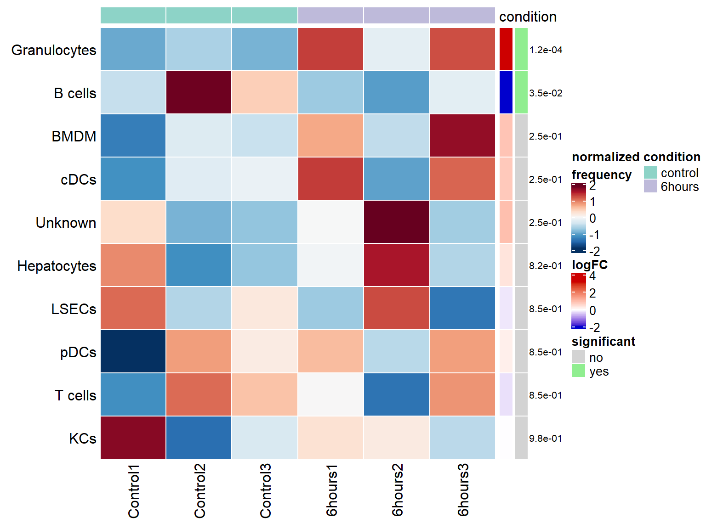
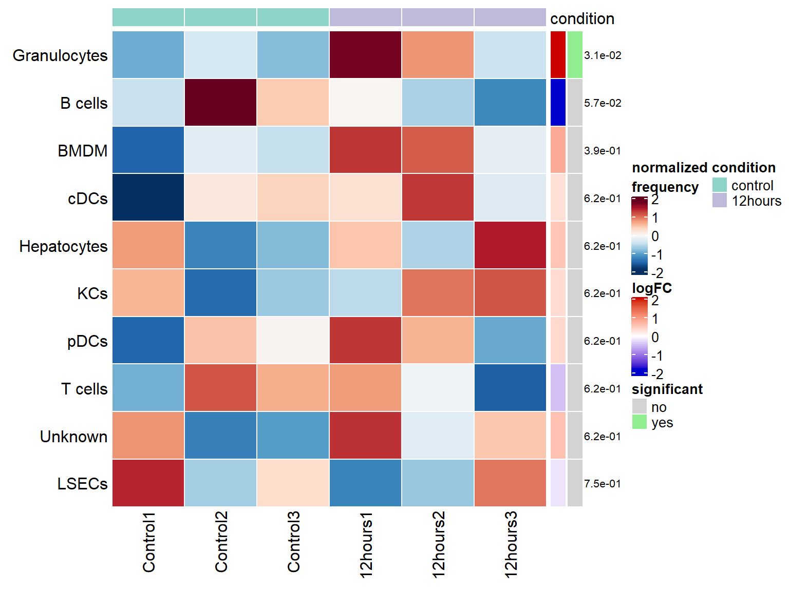
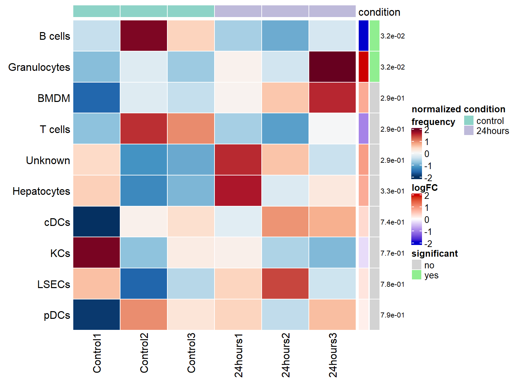
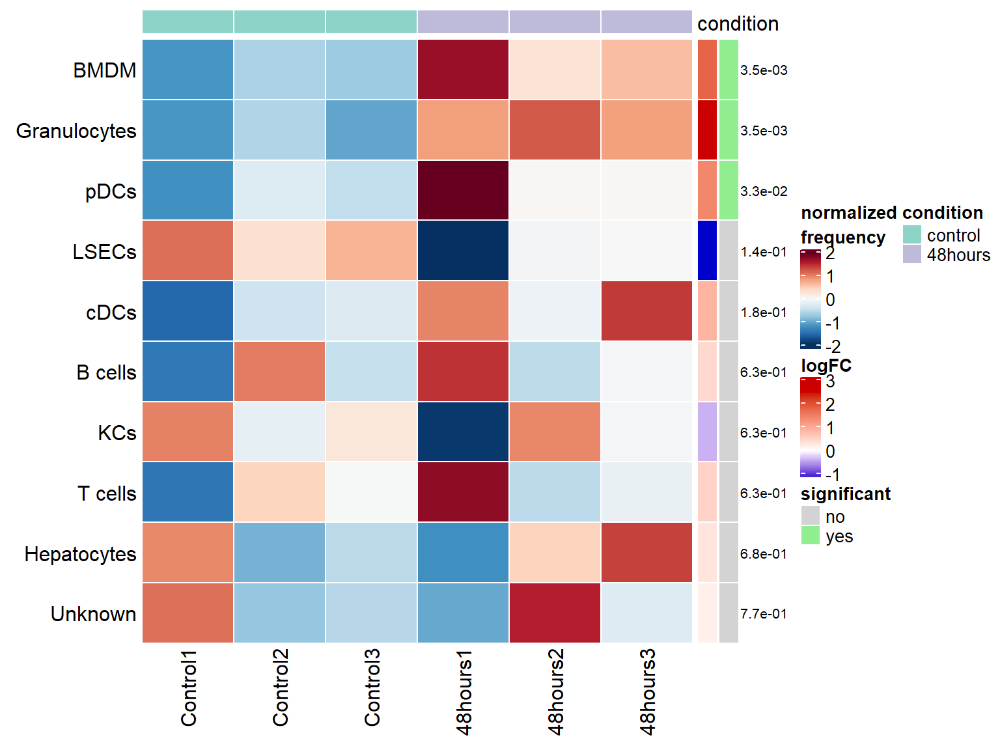
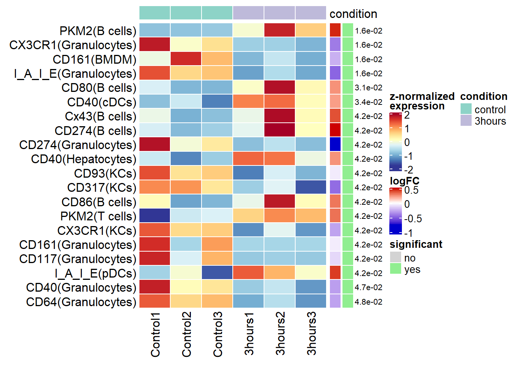
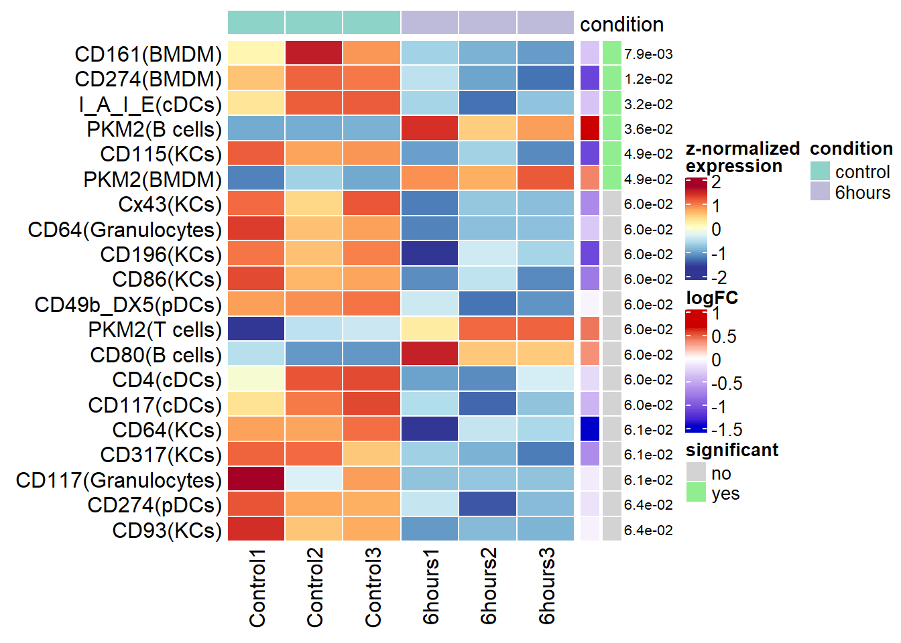
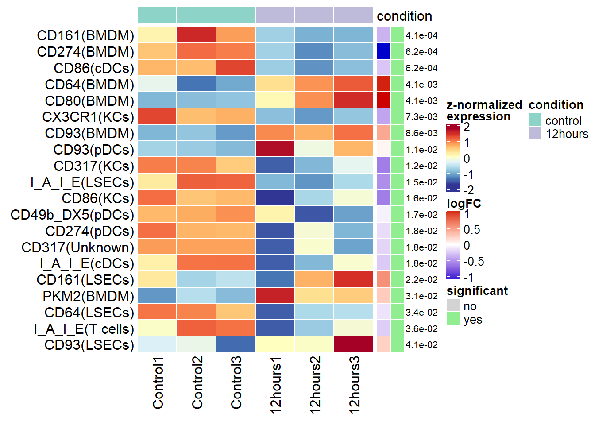
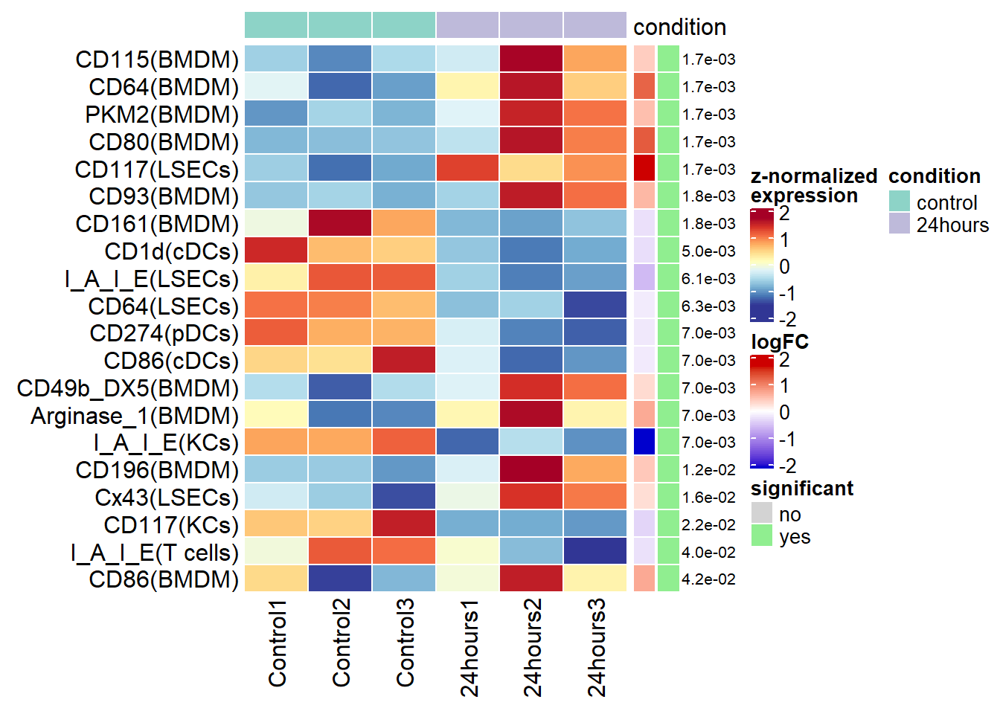
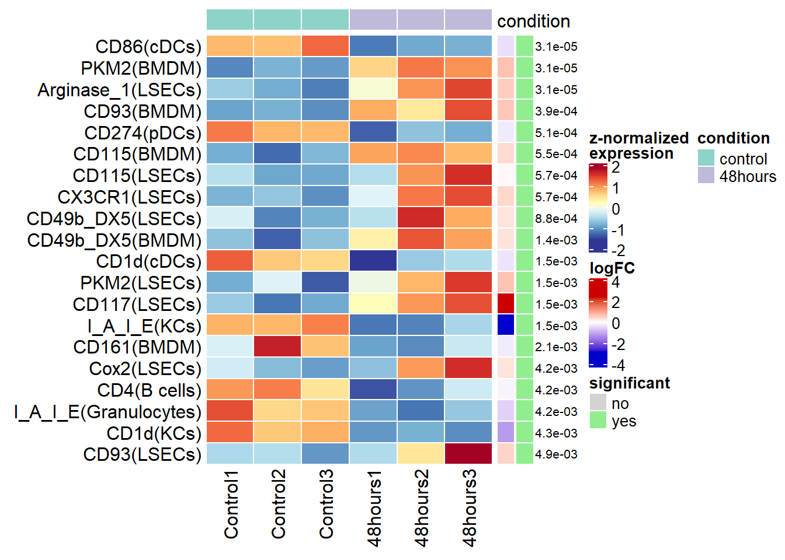

Differential analysis
Tess Brodie
2020-07-02
Last updated: 2020-07-02
Checks: 6 1
Knit directory: myproject/
This reproducible R Markdown analysis was created with workflowr (version 1.6.2). The Checks tab describes the reproducibility checks that were applied when the results were created. The Past versions tab lists the development history.
Great! Since the R Markdown file has been committed to the Git repository, you know the exact version of the code that produced these results.
Great job! The global environment was empty. Objects defined in the global environment can affect the analysis in your R Markdown file in unknown ways. For reproduciblity it’s best to always run the code in an empty environment.
The command set.seed(20200702) was run prior to running the code in the R Markdown file. Setting a seed ensures that any results that rely on randomness, e.g. subsampling or permutations, are reproducible.
Great job! Recording the operating system, R version, and package versions is critical for reproducibility.
- da
- load-data
- load-libs
- session-info-chunk-inserted-by-workflowr
- unnamed-chunk-1
To ensure reproducibility of the results, delete the cache directory 3-differential_cache and re-run the analysis. To have workflowr automatically delete the cache directory prior to building the file, set delete_cache = TRUE when running wflow_build() or wflow_publish().
Great job! Using relative paths to the files within your workflowr project makes it easier to run your code on other machines.
Great! You are using Git for version control. Tracking code development and connecting the code version to the results is critical for reproducibility.
The results in this page were generated with repository version 2486ce5. See the Past versions tab to see a history of the changes made to the R Markdown and HTML files.
Note that you need to be careful to ensure that all relevant files for the analysis have been committed to Git prior to generating the results (you can use wflow_publish or wflow_git_commit). workflowr only checks the R Markdown file, but you know if there are other scripts or data files that it depends on. Below is the status of the Git repository when the results were generated:
Ignored files:
Ignored: .Rhistory
Ignored: analysis/0-preparation_cache/
Ignored: analysis/1-clustering_cache/
Ignored: analysis/2-dimred_cache/
Ignored: analysis/3-differential_cache/
Ignored: analysis/4-PKM2_cache/
Ignored: data/fcs/
Untracked files:
Untracked: SA_plot.pdf
Untracked: output/DA-results_12hours.csv
Untracked: output/DA-results_24hours.csv
Untracked: output/DA-results_3hours.csv
Untracked: output/DA-results_48hours.csv
Untracked: output/DA-results_6hours.csv
Untracked: output/DS-results_12hours.csv
Untracked: output/DS-results_24hours.csv
Untracked: output/DS-results_3hours.csv
Untracked: output/DS-results_48hours.csv
Untracked: output/DS-results_6hours.csv
Untracked: output/sce.rds
Untracked: output/sce0.rds
Unstaged changes:
Modified: .gitignore
Modified: analysis/_site.yml
Deleted: analysis/about.Rmd
Deleted: analysis/license.Rmd
Note that any generated files, e.g. HTML, png, CSS, etc., are not included in this status report because it is ok for generated content to have uncommitted changes.
These are the previous versions of the repository in which changes were made to the R Markdown (analysis/3-differential.Rmd) and HTML (docs/3-differential.html) files. If you’ve configured a remote Git repository (see ?wflow_git_remote), click on the hyperlinks in the table below to view the files as they were in that past version.
| File | Version | Author | Date | Message |
|---|---|---|---|---|
| Rmd | 2486ce5 | Tess Brodie | 2020-07-02 | Publish the initial files for myproject PKM2 |
Load packages
library(CATALYST)
library(diffcyt)Load data
sce <- readRDS(file.path("output", "sce.rds"))DA analysis
# create design matrix
design <- createDesignMatrix(ei(sce), "condition")
colnames(design) <- gsub("condition", "", colnames(design))
# run DA analysis for control vs. each timepoint
for (i in colnames(design)[-1]) {
# create contrast matrix
contrast <- createContrast(as.numeric(colnames(design) == i))
# run DA analysis
res <- diffcyt(sce, clustering_to_use = "mm",
analysis_type = "DA", method_DA = "diffcyt-DA-edgeR",
design = design, contrast = contrast, verbose = FALSE)
# extract results table
tbl <- rowData(res$res)
# write table to .csv
fn <- file.path("output", sprintf("DA-results_%s.csv", i))
write.csv(tbl, fn, row.names = FALSE)
# subset control and timepoint of interest
sub <- filterSCE(sce, condition %in% c("control", !!i))
# plot differential heatmap
p <- plotDiffHeatmap(sub, tbl, all = TRUE, col_anno = "condition")
cat("## ", i, "\n"); print(p); cat("\n\n")
}3hours

6hours

12hours

24hours

48hours

DS analysis
# create design matrix
design <- createDesignMatrix(ei(sce), "condition")
colnames(design) <- gsub("condition", "", colnames(design))
# run DS analysis for control vs. each timepoint
for (i in colnames(design)[-1]) {
# create contrast matrix
contrast <- createContrast(as.numeric(colnames(design) == i))
# run DS analysis & extract results table
res_DS <- diffcyt(sce, clustering_to_use = "mm",
analysis_type = "DS", method_DS = "diffcyt-DS-limma",
design = design, contrast = contrast, verbose = FALSE)
# extract results table
tbl_DS <- rowData(res_DS$res)
# write table to .csv
fn <- file.path("output", sprintf("DS-results_%s.csv", i))
write.csv(tbl_DS, fn, row.names = FALSE)
# subset control and timepoint of interest
sub <- filterSCE(sce, condition %in% c("control", !!i))
# plot differential heatmap
p <- plotDiffHeatmap(sub, tbl_DS, all = TRUE, col_anno = "condition")
cat("## ", i, "\n"); print(p); cat("\n\n")
} Warning: Zero sample variances detected, have been offset away from zero## 3hours Warning: Zero sample variances detected, have been offset away from zero
## 6hours Warning: Zero sample variances detected, have been offset away from zero
## 12hours Warning: Zero sample variances detected, have been offset away from zero
## 24hours Warning: Zero sample variances detected, have been offset away from zero
## 48hours 
sessionInfo()R version 4.0.0 (2020-04-24)
Platform: x86_64-w64-mingw32/x64 (64-bit)
Running under: Windows 10 x64 (build 18362)
Matrix products: default
locale:
[1] LC_COLLATE=German_Switzerland.1252 LC_CTYPE=German_Switzerland.1252
[3] LC_MONETARY=German_Switzerland.1252 LC_NUMERIC=C
[5] LC_TIME=German_Switzerland.1252
attached base packages:
[1] parallel stats4 stats graphics grDevices utils datasets
[8] methods base
other attached packages:
[1] diffcyt_1.7.6 CATALYST_1.12.1
[3] SingleCellExperiment_1.9.3 SummarizedExperiment_1.17.5
[5] DelayedArray_0.13.12 matrixStats_0.56.0
[7] Biobase_2.47.3 GenomicRanges_1.39.3
[9] GenomeInfoDb_1.23.17 IRanges_2.21.8
[11] S4Vectors_0.25.15 BiocGenerics_0.33.3
[13] workflowr_1.6.2
loaded via a namespace (and not attached):
[1] readxl_1.3.1 backports_1.1.6
[3] circlize_0.4.8 drc_3.0-1
[5] plyr_1.8.6 igraph_1.2.5
[7] ConsensusClusterPlus_1.51.0 splines_4.0.0
[9] flowCore_1.99.20 BiocParallel_1.21.3
[11] ggplot2_3.3.0 scater_1.16.1
[13] TH.data_1.0-10 digest_0.6.25
[15] htmltools_0.4.0 viridis_0.5.1
[17] fansi_0.4.1 magrittr_1.5
[19] CytoML_1.99.13 cluster_2.1.0
[21] limma_3.43.8 openxlsx_4.1.4
[23] ComplexHeatmap_2.3.4 RcppParallel_5.0.0
[25] sandwich_2.5-1 flowWorkspace_3.99.22
[27] cytolib_1.99.28 jpeg_0.1-8.1
[29] colorspace_1.4-1 ggrepel_0.8.2
[31] haven_2.2.0 xfun_0.13
[33] dplyr_0.8.5 crayon_1.3.4
[35] RCurl_1.98-1.2 jsonlite_1.6.1
[37] hexbin_1.28.1 graph_1.65.3
[39] lme4_1.1-23 survival_3.1-12
[41] zoo_1.8-7 glue_1.4.0
[43] gtable_0.3.0 nnls_1.4
[45] zlibbioc_1.33.1 XVector_0.27.2
[47] GetoptLong_0.1.8 ggcyto_1.15.4
[49] car_3.0-7 BiocSingular_1.3.2
[51] Rgraphviz_2.31.0 shape_1.4.4
[53] abind_1.4-5 scales_1.1.0
[55] mvtnorm_1.1-0 edgeR_3.29.1
[57] Rcpp_1.0.4.6 plotrix_3.7-8
[59] viridisLite_0.3.0 clue_0.3-57
[61] foreign_0.8-78 rsvd_1.0.3
[63] FlowSOM_1.19.4 tsne_0.1-3
[65] RColorBrewer_1.1-2 ellipsis_0.3.0
[67] pkgconfig_2.0.3 XML_3.99-0.3
[69] locfit_1.5-9.4 tidyselect_1.0.0
[71] rlang_0.4.5 reshape2_1.4.4
[73] later_1.0.0 munsell_0.5.0
[75] cellranger_1.1.0 tools_4.0.0
[77] cli_2.0.2 ggridges_0.5.2
[79] evaluate_0.14 stringr_1.4.0
[81] yaml_2.2.1 knitr_1.28
[83] fs_1.4.1 zip_2.0.4
[85] purrr_0.3.4 nlme_3.1-147
[87] RBGL_1.63.1 compiler_4.0.0
[89] beeswarm_0.2.3 curl_4.3
[91] png_0.1-7 statmod_1.4.34
[93] tibble_3.0.0 stringi_1.4.6
[95] forcats_0.5.0 lattice_0.20-41
[97] Matrix_1.2-18 nloptr_1.2.2.1
[99] vctrs_0.2.4 pillar_1.4.3
[101] lifecycle_0.2.0 GlobalOptions_0.1.1
[103] BiocNeighbors_1.5.6 data.table_1.12.8
[105] cowplot_1.0.0 bitops_1.0-6
[107] irlba_2.3.3 httpuv_1.5.2
[109] R6_2.4.1 latticeExtra_0.6-29
[111] promises_1.1.0 gridExtra_2.3
[113] RProtoBufLib_1.99.8 rio_0.5.16
[115] vipor_0.4.5 codetools_0.2-16
[117] boot_1.3-24 MASS_7.3-51.5
[119] gtools_3.8.2 assertthat_0.2.1
[121] rprojroot_1.3-2 rjson_0.2.20
[123] multcomp_1.4-13 GenomeInfoDbData_1.2.3
[125] hms_0.5.3 ncdfFlow_2.33.2
[127] grid_4.0.0 tidyr_1.0.2
[129] minqa_1.2.4 rmarkdown_2.1
[131] DelayedMatrixStats_1.9.1 carData_3.0-3
[133] Rtsne_0.15 git2r_0.27.1
[135] base64enc_0.1-3 ggbeeswarm_0.6.0